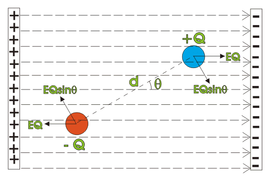

Electrostatic Induction
Electric Field Strength or Electric Field Intensity
Electric Field Due to a Point Charge
Electric Flux Density
Electric Dipole Moment
Electric Dipole in Electric Field
Definition of Electric Field
The field surround an static electric charge is known as Static Electric Field.
We know there are two types of charge present in the nature (i) positive and (ii) negative charge. In positive charge, there is mainly deficiency of electrons and in negative charge there are excess of electrons. Now, we can simply understand the concepts of charge from a very basic example. Take a dry comb, comb your hair (which should be dry) two to three times, now take that comb near tiny pieces of paper, you will see that the paper pieces are getting attracted to the comb. This is the very basic example of electric charge and static electric field. Due to friction there is movement of electrons between comb and hair, so one of them gets positively charged and another one gets negatively charged and as the paper is neutral (i.e. not charged) they get attracted to the comb. So, we can see that there is an attraction force works between charged particle and neutral particle, it has been seen further that there is repulsion between two same charged particles and attraction between two differently or opposite charged particles. This happens due to the field created around a particle. This can be understood if we imagine a glowing bulb, the bulb can be taken as the charge and the visible light can be compared to static electric field, the characteristic of field is similar to the light in the sense that the intensity of the field is greater near the source and it fades as we move further from the source. Now from another point of view we can say that static electric field is nothing but an intense space, in terms of power where work is done or needed to be done upon in presence of an electrically charged particle depending on the nature of the charged particle.
Electrostatic Induction
A positive charge lacks electrons, where as a negative charge has excess electrons. What about the phenomenon of attraction of a neutral particle by a charged particle, because we can understand the phenomenon of attraction and repulsion between oppositely charged particles and same charged particles, but how neutrally charged particles get attracted by charged particles. This can be explained by electrostatic induction. The word induction itself explains a lot, it means action which is not the result of direct contact. To explain the above explained phenomenon, we can say that when a neutral body is brought near the charged body, due to influence of static electric field, free electrons inside the neutral body either come nearer to the charged body or go away from charged body depending upon the nature of charge in the charged body. If the charged body is positive, free electrons of the neutral body come nearer to the charged body and if the charged body is negative, the free electrons go away from the charged body. Thus, opposite charge is induced in the neutrally charged body near to the charged body and same charge on the opposite side. In this way, the portion of the neutral body nearer to the charged body is induced by opposite static charge and hence it would be attracted by charged body. We can understand the phenomenon more accurately by a diagram.
Electrostatic Induction
Electric Field Strength or Electric Field Intensity
The force acting on a unit positive charge inside an electric field is termed as electric field strength
We discussed earlier, what is electric field. Now in this article we will know about electric field strength. Electric field strength can be determined by Coulomb’s law. According to this law, the force ‘F’ between two point charges leaving charge ‘Q1’ and Q2 and placed at a distance ‘d’ from each other is given by,
Where K is any constant, in SI system the force between two charges is given by
Here εo is the permittivity of vacuum = 8.854 x 10 − 12 F/m and εr is the relative permittivity of the surrounding medium.
Now if Q2 = + 1 Coulomb, then
This equation shows the force acting the a unit positive charge placed at a distance d from charge Q1. As per definition this is nothing but of electric field strength of charge Q1 at a distance d from that charge. This field strength can also be written as,

Depending on this expression, the electric field strength can be expressed in Newton/Coulomb and it can also be expressed as Volt/Meter (volts per meter). [ This can be proved that these two unit are equivalent.] The electric field strength has direction and hence it is vector quantity.
Intensity means the magnitude or amount. Now field intensity similarly means the magnitude of the strength of the field. Finally electric field intensity or strength can be written as,
Video on Electric Field
We know that there is an electric field around a charge, and whenever there is an electric field there is electric flux around it, this field though theoretically assumed to be spread up to infinity but practically they are taken to be composed of small closed space. Now from each point of charged surface, electric field tube force emerges, which radiates through the surrounding. This total number of force tube is called electric flux.
The field is nothing but an energy field, i.e. to go through the field work is done by or done upon a point charge. So, there must be some kind of energy present in the electric field.
Electric Field Due to a Point Charge
If we consider a point charge of Q Coulomb, the total number of flux radiating from the charge (Q Coulombs) is equal to Q coulombs.
Electric Field due to a Point Charge
Electric Flux Density
The tube forces which are termed as electric flux, radiate normally from the entire surface enclosing a point charge is nothing but the total charge of the point. Now, the amount of radiating this flux through unit surface area on the imaginary enclosure of the charge, is known as electric flux density. The unit of this is coulombs/m2.
Let's take a point charge of Q coulomb and place it at the center of a sphere of radius ’r’ then the electric flux density is
From the above relation we can see that the electric flux density does not depend on the medium, i.e. the absolute permittivity and relative permittivity, and it is inversely proportional with the square of the distance from the charge.
We know that electric field intensity or electric field strength is given as
Hence, the relation between electric field intensity and electric flux density is given by the equation
Electric Dipole Moment
Electric dipole is created by two opposite and equal charges, a certain distance apart. It is equal to the product of one charge and the distance between them. Say two charges + Q and – Q apart from each other by a distance a. Then as per definition, electric dipole moment,
This is a vector quantity directed from negative to positive charge.
Electric dipole in Electric Field

When an electric dipole is placed inside a uniform electric field, the negative end of the dipole is attracted by positive end of the field and positive end of the dipole is attracted by negative end of the field. Due to these two forces, which are opposite in direction, there would be a torque acting on the dipole body. Let this torque is τ and θ is the angle between electric dipole and electric field. The amplitude of force acting on charge Q in the electric field E is given as EQ.
Due to this field the dipole will be oriented parallel to the electric field.
Now let us calculate how much work to be done for this parallel orientation of dipole along the field. If due to this electric dipole moment, the orientation of dipole changes from θ1 to θ2. So work done for this angular moment is given as,
This is the work done by electric field which will be stored as potential energy in the dipole. If dipole is aligned from its vertical position to parallel position with respect to direction of electric field. The Work done or potential energy stored is
 by
by